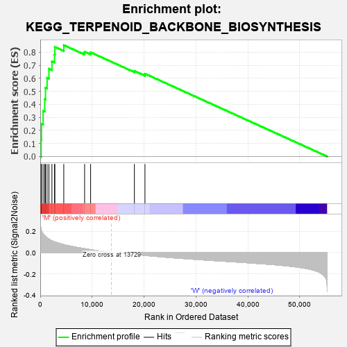
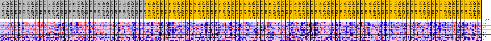
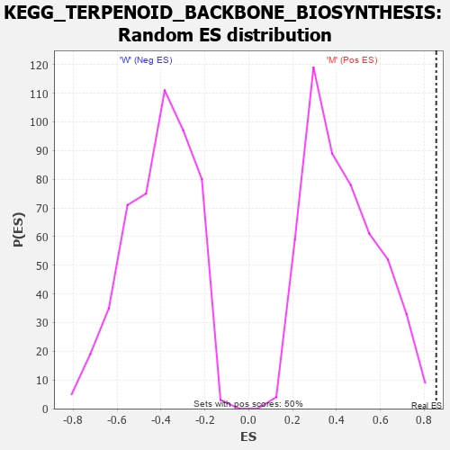

| Dataset | MUC16.MUC16.cls#M_versus_W.MUC16.cls#M_versus_W_repos |
| Phenotype | MUC16.cls#M_versus_W_repos |
| Upregulated in class | M |
| GeneSet | KEGG_TERPENOID_BACKBONE_BIOSYNTHESIS |
| Enrichment Score (ES) | 0.8544187 |
| Normalized Enrichment Score (NES) | 1.9930168 |
| Nominal p-value | 0.0 |
| FDR q-value | 0.04567033 |
| FWER p-Value | 0.084 |

| PROBE | DESCRIPTION (from dataset) | GENE SYMBOL | GENE_TITLE | RANK IN GENE LIST | RANK METRIC SCORE | RUNNING ES | CORE ENRICHMENT | |
|---|---|---|---|---|---|---|---|---|
| 1 | ACAT2 | na | 165 | 0.215 | 0.1269 | Yes | ||
| 2 | HMGCR | na | 228 | 0.205 | 0.2496 | Yes | ||
| 3 | FDPS | na | 551 | 0.176 | 0.3498 | Yes | ||
| 4 | ACAT1 | na | 859 | 0.157 | 0.4391 | Yes | ||
| 5 | HMGCS1 | na | 1007 | 0.149 | 0.5265 | Yes | ||
| 6 | DHDDS | na | 1317 | 0.138 | 0.6039 | Yes | ||
| 7 | IDI1 | na | 1670 | 0.126 | 0.6735 | Yes | ||
| 8 | PDSS2 | na | 2252 | 0.111 | 0.7297 | Yes | ||
| 9 | PDSS1 | na | 2746 | 0.101 | 0.7815 | Yes | ||
| 10 | MVD | na | 2816 | 0.100 | 0.8404 | Yes | ||
| 11 | MVK | na | 4533 | 0.075 | 0.8544 | Yes | ||
| 12 | GGPS1 | na | 8547 | 0.036 | 0.8037 | No | ||
| 13 | HMGCS2 | na | 9706 | 0.027 | 0.7991 | No | ||
| 14 | PMVK | na | 18139 | -0.016 | 0.6564 | No | ||
| 15 | IDI2 | na | 20172 | -0.026 | 0.6352 | No |

